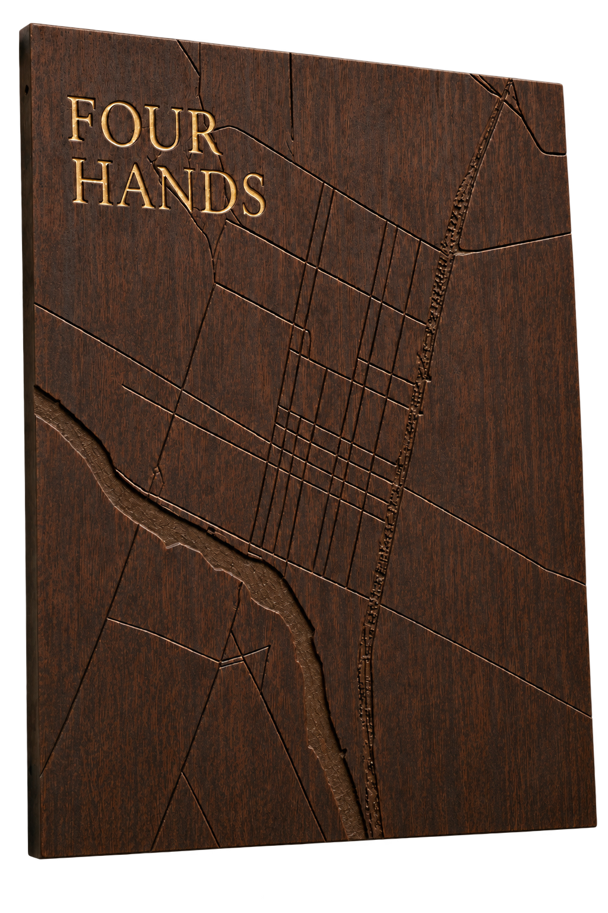
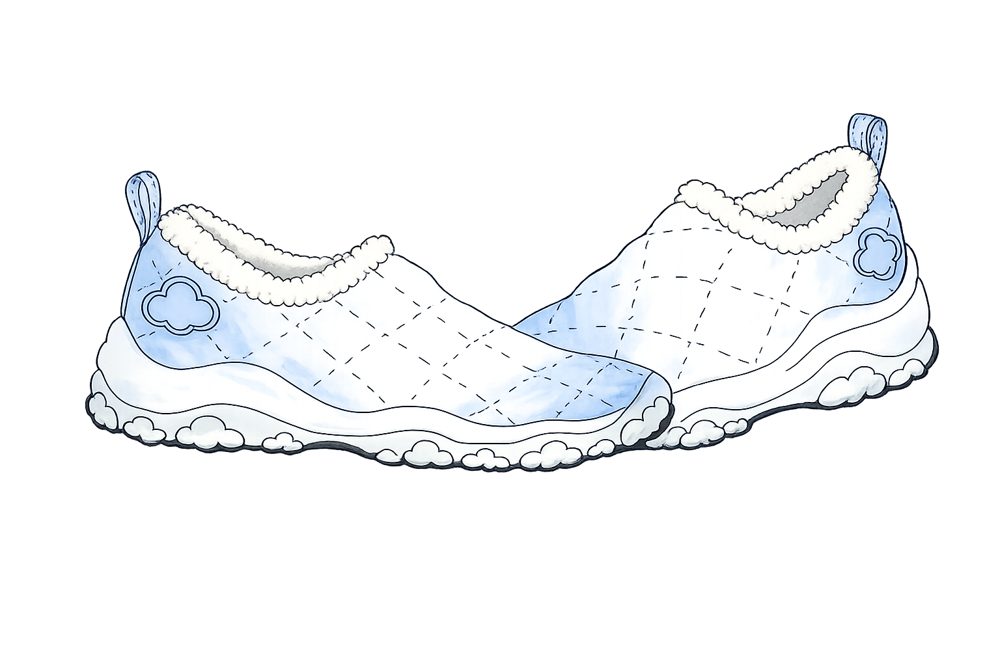
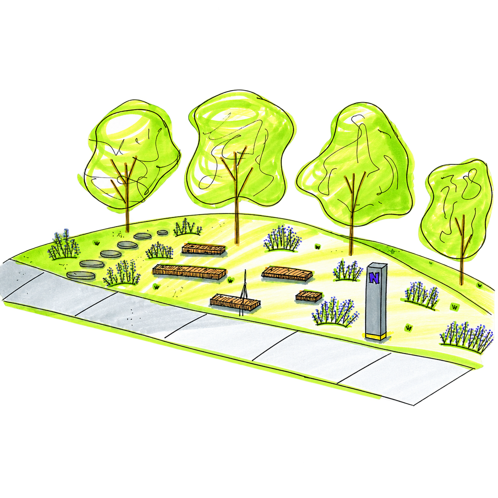
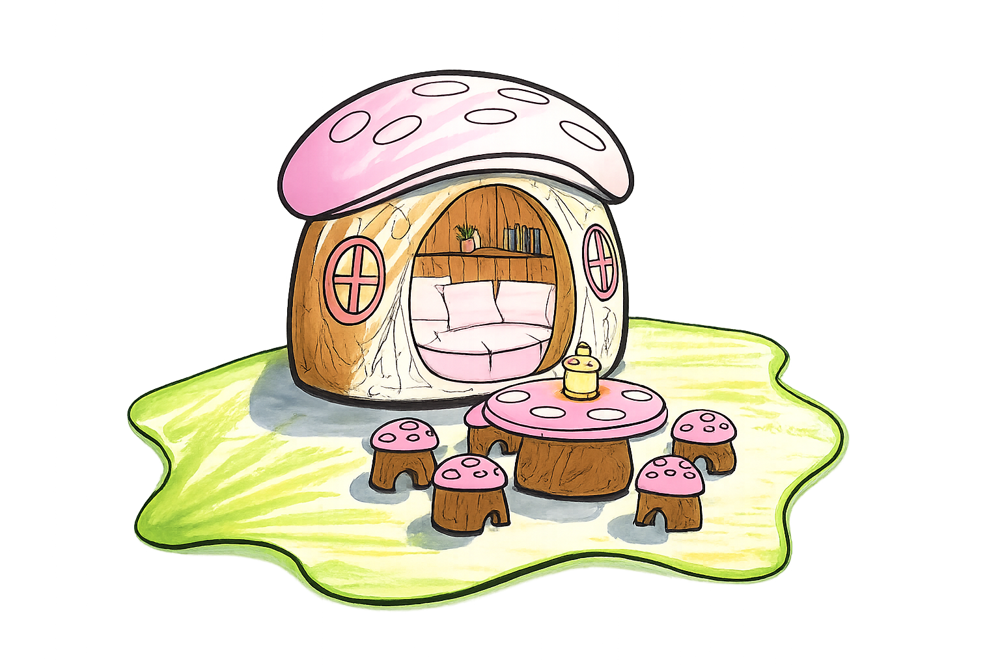
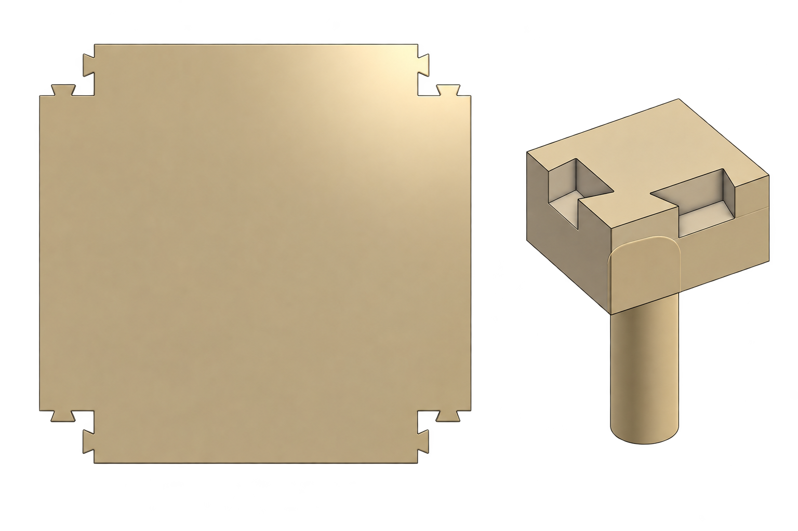
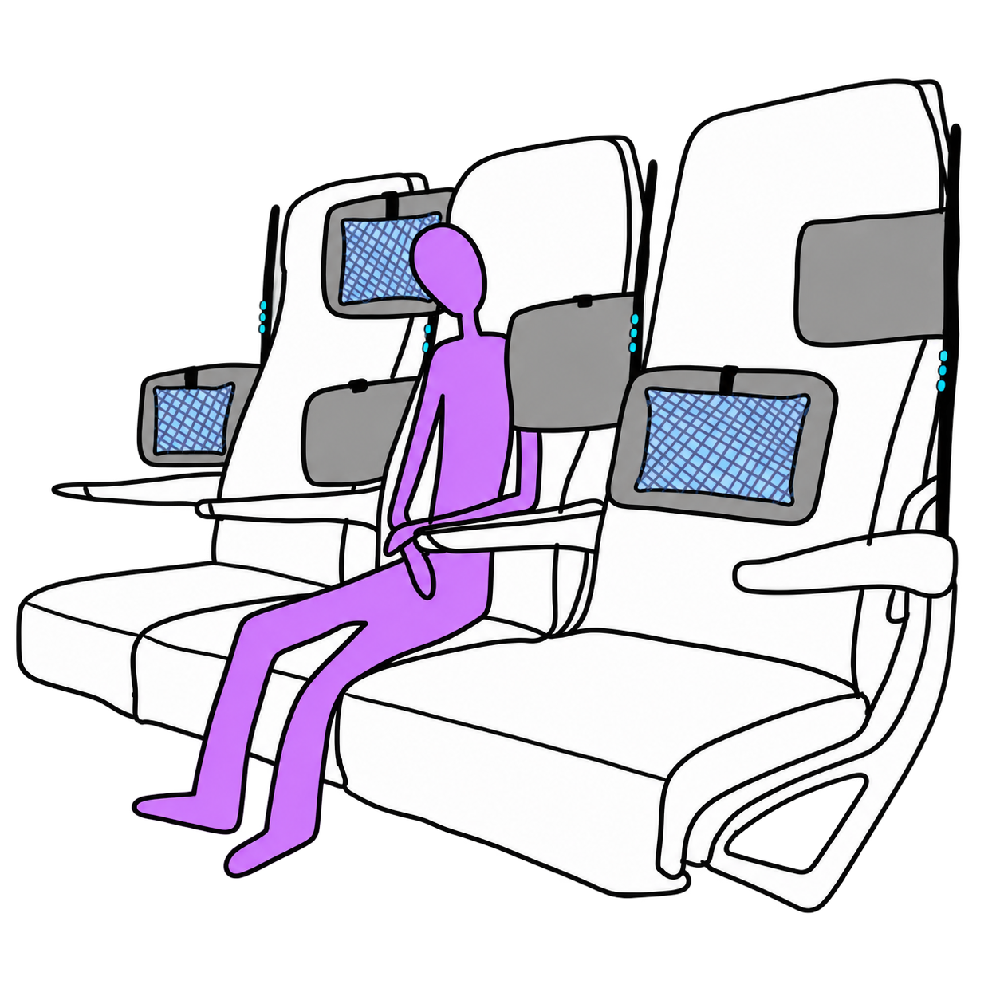
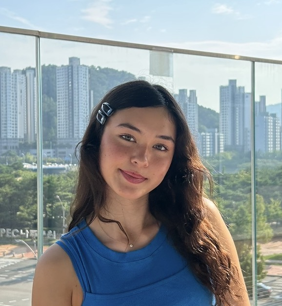

Curious about
what people do.
Even more curious about
why they do it.
Sarah Thornton · Designer grounded in psychology
projects
digital

physical

Andalusia Design x
Four Hands
Industrial DesignCase Study

Footwear
Industrial DesignConcept Sketch

Northwestern Bus Stop
Industrial DesignConcept Sketch

Children's Furniture
Industrial DesignConcept Sketch

Stow
Industrial DesignPrototype

CloudFlex Headrest
Industrial DesignCase Study
hi, i'm sarah.
I'm a designer with a background in psychology, which means I'm drawn to the habits, frustrations, and tiny decisions that shape how people interact with the world around them. I use those observations to design products and experiences around how people actually think and behave, not just how they’re supposed to.
Outside of design, I'm usually testing a new rice cooker recipe, finding somewhere scenic to hike, or cafe hopping in search of a new favorite spot.
Thanks for stopping by! If something here makes you curious, I’d love to hear from you.
